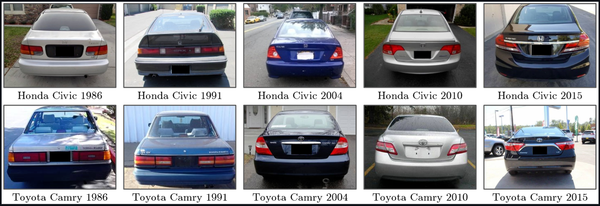
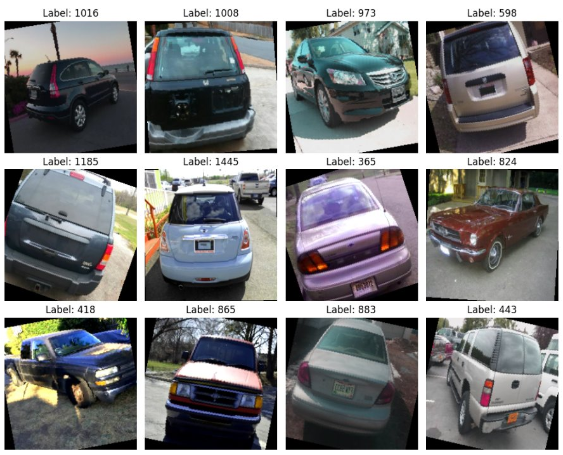
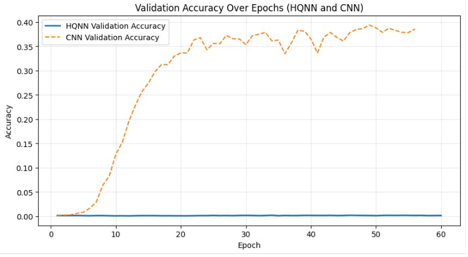
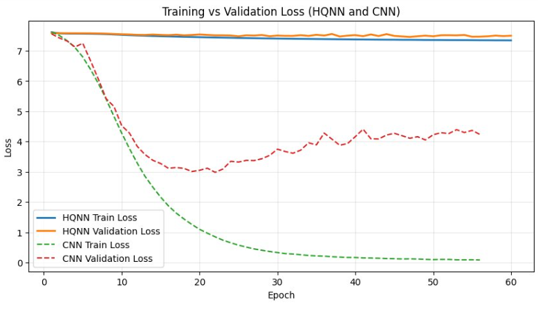

As we reach limits with classical compute power, it becomes necessary to investigate methods that execute faster and are capable of solving more difficult problems. By applying concepts from quantum mechanics to the computing space, we can leverage the power of superposition, entanglement, and interference to parallelize operations and operate at higher dimensions.
In this project, we compare classical machine learning with quantum machine learning through image-based car model classification algorithms. Specifically, our models predict vehicle make, model and year. This problem being chosen because it's already sufficiently difficult for a classic approach using convolutional neural networks due to the minute level of detail a model would need to extract to differentiate between model years. Our goal with this project is to determine whether quantum-enhanced models can achieve performance comparable to or superior to classical approaches in the context of image classification.
We explored two separate approaches:
The Stanford Cars dataset contains 16,185 images across 196 vehicle classes. Each class generally represents a specific vehicle make, model and year combination.
The vehicle Make and Model Recognition Database (VMMRdb) contains 291,752 images across 9,170 classes. The dataset includes variation in lighting conditions, image quality, and camera angle. Though generally the same angles are used across classes.
This normalization was done solely on the larger-scale normalization. The smaller-scale explored 3-10 classes in the Stanford Cars dataset, so this normalization wasn't necessary.
This was generally identical across both experiments. We even explored the impact of RGB channel normalization in the small experiment. All of this augmentation was in an effort to decrease the chance of overfitting, improve convergence, and create a more robust dataset.

...
We used a ResNet-50 convolutional neural network as the classical baseline. At their core, ResNet architectures utilize residual connections to improve gradient flow, which enables deeper networks while mitigating the vanishing gradient problem. To improve computational efficiency, ResNet models also use bottleneck blocks that intentionally reduce channel dimensionality before doing to bulk of the convolution computation.
Our hybrid architecture combines a pretrained ResNet-50 backbone with a variational quantum circuit implemented using PennyLane. The ResNet-50 acts as a feature extractor, producing a 2048-dimensional feature vector that is then projected down to the number of qubits our circuit uses. That number being 6 in our case. Those 6 features are then encoded into the quantum circuit through parameterized rotation gates and then mapped back into the classical feature space to produce the final classification outputs.
35.78%
65.50%
0.21%
0.81%
The classical ResNet-50 model significantly outperformed the hybrid HQNN on the large-scale dataset. Fine-tuninng of a pretrained ResNet-50 model with our quantum circuit head was tried with minimal gain, only a 0.41% improvement above an HQNN model not using fine-tuning. Overall, the projection from a 2048 feature space down to a 6 dimentional feature space is likely the cause of this drop in performance. In our future work we consider some ideas of how to potentially improve this.


The validation accuracy, validation loss, and training loss remains constant while training the HQNN, not improving much at all. The validation accuracy, validation loss and training loss for the CNN/ResNet-50 model do improve for around 20 epochs before the model actually begins to overfit as shown by the increase in validation loss and the jitteriness of the validation accuracy after that point.
...
Olivia Watt, Lucas Shadoyan, Thomas Nguyen. "Hybrid Quantum Neural Networks for Image Classification" 2026.